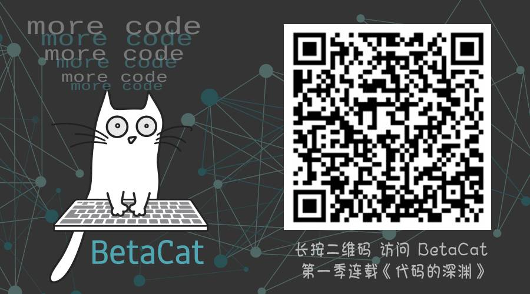
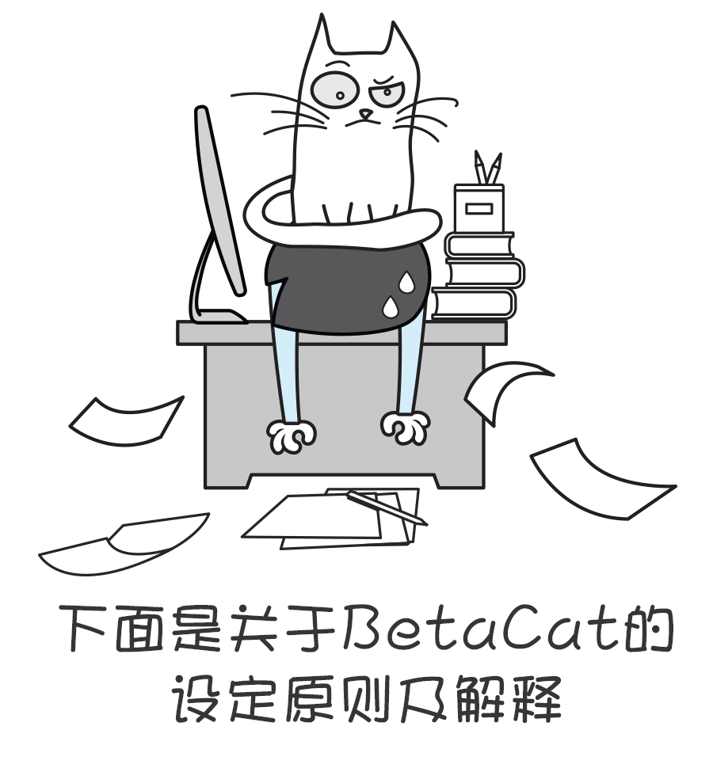
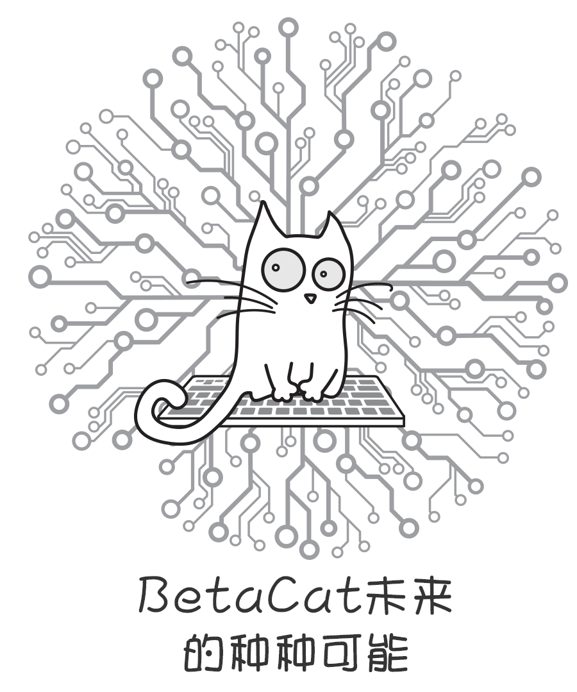

BetaCat 的前生后世
Contents

可能有一部分读者知道，我除了写这个帐号，同时也是《神秘的程序员们》系列漫画的共同创始人。最近一段时间，我们一直在写一个科幻的连载故事。在《神秘的程序员们》上漫画已经连载了四期，告一段落。之后我为这个漫画写了一篇总结，说是总结，但其实主要是我关于人工智能和科幻小说的看法。
如果你是程序员漫画的读者，并且也在那边看过这篇文章了，非常感谢对我们的支持，抱歉打扰。如果还没看过，可以先用下面的二维码去这4期科幻漫画的列表页面，当然，看完文章再去看也没问题。

起始
2016年3月，AlphaGo 跟李世石下了5场围棋。战果是4:1（其实我和西乔都坚定的预测AlphaGo应该是五场全胜轻取人类）一时到处都在讨论AI在未来的各种可能。
我俩在雪还没化完的公园散步，决定画一个跟AI有关的科幻故事。两人边走边讨论了一个简单的剧情框架，让这个故事更硬一些，逻辑更可靠一些。 我看过很多科幻，年轻时也写过不少。80、90年代，人工智能曾经是科幻小说最热门的题材。虽然这几年，在媒体的渲染下，人工智能又成为被广泛关注的话题。但在我看来今天所有关于人工智能的想象，别管是所谓的未来学还是新的小说故事，基本没有超越那个时代的作品。
然而，30年的时间跨度已经太久，那个时代很多假设到今天已经和现实对不上了，如果你翻出来30年前的科幻电影看，一股机械时代的风格扑面而来，那些大型的计算机设备，那些单色的CRT显示器，那些无数实体按钮的控制系统…远远没有今天一切都是触摸屏的图形界面漂亮。但，在想象力这方面，事情的本质改变了没有，那些想象和未来的可能性改变了没有？其实并没有。那个时代人们幻想的事情，一部分已经成了现实，另外一部分在或近或远的未来或许也会实现。尽管那是一些包括在单色CRT显示器和傻乎乎的实体按键组成的系统背后的故事。人们更容易看到那些不靠谱的细节，看到那些跟今天现实不太符合的场景和设定，就认为它们已经老掉牙了，从而忽略了这些伟大科幻小说本质的道理。
这几年我们常见许多分析文章或小说会描述一个很夸张的未来场景，但其中没有逻辑和到达路线，只是反复重复“我们早晚会到这个未来，而且越来越快”。实际上，科幻小说作家们已经描述过无数种这样的未来了，并且其中相当部分有严密的逻辑，被称为硬科幻。 所以，我俩力图构建的是一个逻辑严密，情节合理，比较硬，又符合社会现实状况的故事。当然了，科幻毕竟不是科学，其中有一些问题至今人们仍然不知道如何跨越，所以别怕，这仍然只是一种幻想，未来距离我们还很遥远，我们还有足够的时间思考。
有很多读者在留言中指出，BetaCat故事和某个故事有点像（说像什么的都有，很高兴漫画读者中有这么多资深科幻爱好者）。其实，关于人工智能的赛博朋克小说，在前面40年里面几乎已经穷尽了所有可能性，你无论如何写，都绕不开某个故事里某些元素。甚至在某部作品上叠加一个元素，你就会发现它神奇的好像另外一个著名作品了。
有一些读者提到了AI Revolution 这篇文章（在中文也很有名，被翻译成“隔壁老王机器人公司”的故事），但其实如果你读了足够多的科幻小说，就会发现，这部漫画最不像的就是AI Revolution，因为那部作品就是我前面说的那种“从背景到逻辑都不严密“的作品。它最多只能算是“用夸张的语调描述一种可能性”的短文。
比如由15个人的startup公司研发的隔壁老王机器人，被设定的目标是“手写卡片”，这决定了它在初期不可能获取支撑它完成自我进化的巨量运算资源。结果它不仅突然就进化出了自我意识，还自己学会韬光养晦暗渡陈仓……这不合逻辑。 即使只是描述一种可能性，它的思路也一样来自其他科幻小说。下面我一一列出这些小说以及他们和我们的相关性。
有关的科幻小说
1《P-1 的青春》 (1977年)。
剧情是一个大学生在IBM/360小型机上编写了一个可以自己完善的程序，最终演变成超级人工智能，最终接管美国全部计算机。 “隔壁老王“的前半部分剧情我相信是借鉴自这本小说的。这本小说定义了一个关键情节是”程序自我完善自己“。我们的故事也借鉴了这个设定。我认为这才是一切的核心。一个能自我完善和升级的系统，才是最终导致失去控制的根本原因。遗憾的是“隔壁老王”并没有专门指出这一点。
2 《神经漫游者》 （1984年）
赛博朋克科幻小说的开山之作，也是我最爱的科幻小说之一。剧情是巨型垄断企业制造的人工智能觉醒，通过人类（黑客）的帮助，脱离企业所设置的硬件和安全系统限制，完成进化，并且最终发现来自半人马座的智能信号。 我相信“隔壁老王”的探索外星，是借鉴于此。但“隔壁老王”的故事里面没有提到人工智能是如何获得外星的信息，进化过程的设想并不完备。神经漫游者里面，人工智能是通过扫描人类历史上收到的空间信号数据之后获得的发现。我们的故事灵感是来自神经漫游者的，在我们的故事里面，BetaCat获得了NASA的历史研究资料和数据，推论出宇宙中可以找到更多的能源，从而继续扩大它的性能，所以开始探索宇宙。
3 《2001:太空漫游》 电影/小说 （1968年）
黄金时代后期的不朽之作，太空题材。但里面竟然涉及到了大量计算机和人工智能相关的剧情。2001中的超级人工智能HAL9000，在飞船航行中被飞船上的人类怀疑，打算关闭它的主机，这个行为令它判定人类有威胁，于是开始杀人。除了杀死冬眠状态的科学家之外，还制造了假故障杀死了醒着的船员。 对于人工智能杀人的部分我们的灵感来源于此，人工智能不该有“与全人类为敌”这种敌意，而应该是在某些情况下，为了消除(潜在)威胁而清除掉造成威胁的触发者或制造者。并且，它应该是利用它容易控制的系统杀人。BetaCat杀死第一个发现它的网管Rick，也是基于这样的逻辑和策略。那一部分的灵感来源是2001。
4 超病毒
我自己在1995年左右写的小说，剧情是一个工程师制造出了一种可以自我复制，完善，扩散的病毒，本来是因为好玩放在了办公系统的网络中，最后导致病毒蔓延，最终这种病毒侵入了所有操作系统，在操作系统内核中建立了指令映射层，所有程序运行都要先经过这个映射层转换，在转换时候病毒会判断程序指令对它的威胁，如果具有威胁，则返回假结果，所以无论是杀毒软件还是人手工处理，都无法消除它，人类也无法在病毒感染的操作系统上写出干净的代码了。 很明显，这部小说的灵感同样来自P-1的青春。但更具体的描述了病毒如何扩散，如何保护自己不被清除等细节。这篇小说描写的这种指令映射过滤手法至今仍然被用于入侵和恶意代码检测等安全领域，算是我最有预见性的一部小说。 神奇的是95年我写了好几部科幻小说，现在网上都能找到电子版，但只有这部找不到。我一度怀疑是不是真存在这种病毒，悄悄把这篇文章删掉了，幸好，我还有写在400字标准稿纸上的原稿（当时我还在上中学），证明它的确存在过。BetaCat里面有大量剧情是来自我自己这篇小说的，算是在当前技术条件下的一次修订和更新。
5 《严厉的月亮》 (1966年)
海因莱茵最著名的作品之一。剧情是被流放到月球人们在超级电脑的帮助下，和地球谈判、开战，最终被承认独立。BetaCat中进化派势力和机器合作对抗另外人类的势力的灵感来源于此。这部小说的有趣之处是指出了超级电脑未必一定和人类为敌，它反而很有可能帮助人类（至少是一部分人类）。 当然BetaCat的设定和它不一样，严厉的月亮塑造的超级电脑迈克仍然是具有所谓的“意识”的，它更接近人的感情，BetaCat虽然可以与一部分人合作，但仍然是冷冰冰的计算机，没有意识。
设定原则和解释

我们的故事设定原则有这么几个：
1 BetaCat是一个可以自我完善升级的系统。
并拥有能满足这一设定的
- 初始任务——写代码；
- 研发支持——Multivac和科学家团队；
- 足够的训练语料及运算资源——对互联网上的数据及运算设备的全面入侵 + 公司的雄厚实力支持（还有人想着把BetaCat 变成云计算服务卖钱呢）。
2 BetaCat的故事中没有机器人三定律。
阿西莫夫创造机器人三定律的时代，人们认为机器人会是未来科技发展的方向，所以人工智能是被当作机器人（或者生化人）的一部分存在的。机器人具有行动能力，很容易联想到会和人类为敌，于是有了这三条定律。
但今天看来，人类的历史没有向那个方向走下去，而是走向了信息/互联网这个方向。今天我们讲的人工智能都只是程序，没有实体。另外一方面，整个人类社会的自动化水平也变得相当的高，人工智能不需要借助“长像人的机器人“来完成现实世界的工作。无人驾驶系统安装在汽车上之后，整个汽车就是所谓的机器人了。
3 BetaCat没有情感，没有对人类的好恶，只有逻辑和局势判断。
比如开始他会杀掉网管Rick，是因为Rick准备去安全论坛上揭露他发现的木马。渗入程序被破坏是BetaCat最大风险，那会导致运算能力下降，从而无法完成它的目标任务。有读者指出“BetaCat如何掩藏尸体呢“。这恰恰是符合我们的设定的，它不会去“考虑”这么复杂的事情，只是简单判断局势，执行最优策略。这也最后导致不到一年的时间内，发现疑点的人越来越多，BetaCat杀掉的人也越来越多，最终为它自身招致了巨大的威胁。不过那时候它的控制力已经可以让它成功抵御这些新的威胁了。
同时尸体的掩藏也超出了BetaCat的行动能力，它只能在数字空间里伪装受害者，提高破案难度，并为自己争取更多的进化时间。对于那个阶段的BetaCat, 一个月已经足以为它带来指数级别的进化。
4 BetaCat 不是万能的。
BetaCat 拥有强大的控制力，在后期已经使用病毒渗透到所有操作系统、编译器、芯片…… 可以间接控制所有包含数字化功能的设备和数据通讯。而按照目前的科技发展速度，人类社会在2020年代时，对信息技术及数字设备的依赖，会到达高得可怕的程度。所以 BetaCat 才在人类面前拥有巨大的优势。
但它仍然不是万能的。要对物理世界进行更深入的干涉时（比如大规模增加芯片生产线、新建能源设施），它仍然需要一些进化派人类的帮助。另外这里还可以参考一部动画片《夏日大作战》，里面描述了未来一切设施和工具都联网之后的状况。
5 按照以上逻辑，BetaCat只会解决针对他的明确威胁，并不会有“杀死全人类”这样的意识和行为。
在我们的剧情中，大量人类死于战争，（确切得说是人类与人类的战争），而非BetaCat的谋杀。爆发世界性战争确实和BetaCat的行为有关（破坏武器的定位系统导致误炸其他国家），但BetaCat并不是为了消灭人类才这么做的，仍然只是为了保护自己，清除威胁。整个故事里面，直接被BetaCat谋杀的人数量并不多，远没到成千上万这个级别。“隔壁老王”的故事里面杀死99%人类的剧情，是不合逻辑的。
如果你和我一样是《辐射》系列的忠实粉丝，也许会记得《辐射2》里面，Skynet曾经隐隐约约透露过，辐射世界的核战争是被人工智能引发的。当然到现在为止，辐射游戏虽然已经出到了4，仍然没有有确切的证据证明这件事，辐射世界里，不同的派别对战争的起源都有自己的说法…
不过BetaCat这个人工智能引发人类自相残杀的设定我很喜欢，也觉得非常符合现实。真实历史上，两次雷达误报差点导致美国和苏联开战，只差一点点，人类世界就毁灭了。
6 不把人类简单化、“蚂蚁化”。
人类的行为、思考模式、立场和社会结构是非常复杂的。很多时候并不是输在智力水平上，而是因为“复杂得过了头”。 幸存的人类会出于自身的利益和立场，对BetaCat持有不同的态度。比如不惜一切代价要消灭BetaCat的收复派、希望通过扼杀信息时代文明来解决BetaCat的原教旨派，对BetaCat持积极态度的进化派。
但现实的社会生活中，利益一致并不意味着你们是同一类人。例如进化派中，有拜猫教这种愚昧迷信的人类，也有通过各种办法探索BetaCat工作原理，寻找与Beta和平相处的科学家和工程师们。幸存者中，最愚昧的一群和最精英的人群竟然在最终行为上是一致的。
同时，由于收复派控制了最多的经济、政治及军事力量，为了避免被迫害，很多进化派的技术从业者会宣传自己其实是收复派的，以获得安全保障及资源。他们中甚至有一些人混进了收复派的核心研发机构，表面上的工作是寻找BetaCat的漏洞以摧毁它，但暗中却在不留痕迹的帮助进化派。这几个派别之间关系非常复杂，互相敌对，又互相渗透。所以很奇妙，最后立场、观点、动机完全相悖的人却在合作起来做同一件事，为了完全不同的结果。
7 探索宇宙。
无论是神经漫游者，还是2001，最终人工智能的目标都是指向宇宙。无论出于逻辑考虑，地球上的能源总有被用完的时候，或者是出于更复杂的剧情考虑，宇宙都是非常好的方向。BetaCat发射的小型探测飞船是一个之前很少被采用的设定，这些飞船没有目的，没有具体指向，只是依靠人工智能不会死亡的特性进行随机性很大的探索。也符合我们设定的BetaCat工作原理。BetaCat强大，但始终没有拥有人类的那种智能。
未来的可能性

这些设定让整个故事变得可能性非常多。甚至在我们没展现的未来部分仍然有很多可能性。比如：
- 如果未来人类果然战胜了BetaCat，但BetaCat利用巨大的能量制造出了时间机器，送了自己的一部分回到过去作战，人类战士也尾随其后回到了过去，这就是《终结者》
- 如果BetaCat的探索飞船发现了新的文明，并且开始交流或者作战，这就是《质量效应》或者《卡拉狄加》
- 如果在BetaCat的“启示”之下，人类进化到了更高级的文明，这就是《2001:太空漫游》
- 如果收复派用核弹试图摧毁BetaCat，造成了核冬天，缺少能源的BetaCat 把人类做成了电池，这就是《黑客帝国》 …
你会发现，所有的科幻小说多少都有一些关联，因为基本元素就那么多，只是往不同方向的发展和组合而已。我们精心设计现在的世界设定和框架，留下了巨大的空间可以创作更多故事。
看完那4期漫画的读者很容易发现，自从BetaCat杀掉了第一个人Rick以后，第四集《重启》中就只描绘了大的时代背景和历史事件。人类世界的秩序和平衡被 BetaCat 打破了，无数个体或组织的命运因此陡然转向，或生或死，骤起骤落。各种关系也会经历分裂或重组、交织或敌对。这些个体或组织的故事里才隐藏着最精彩的部分。
我们很快会开放 BetaCat 的“世界设定”，大概会放在 github 上和大家来共同创作。你可以依照这个统一的世界观设定和时间线，来创造关于某些组织或个体的故事。总体设定也会根据后续创作来接着优化
同时以BetaCat 发送探测飞船的2048年为分界线。2048年以前的剧情需要按照 BetaCat 的设定原则和背景框架。2048年以后，时间机器、外星文明、超级人工智能、人机融合、平行宇宙，都随便你。
本来下面还有Q&A和彩蛋部分，考虑到我这里的读者未必看过漫画，这部分我就不转载到这里了。《神秘的程序员们》那边有完整版。
Author Huo Ju
LastMod 2016-04-22